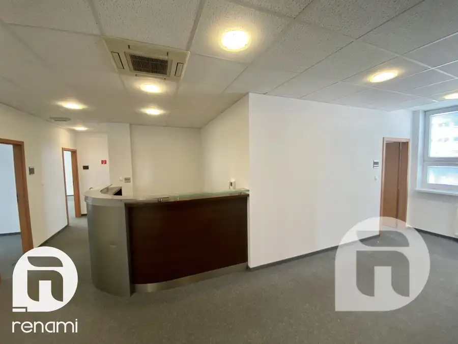
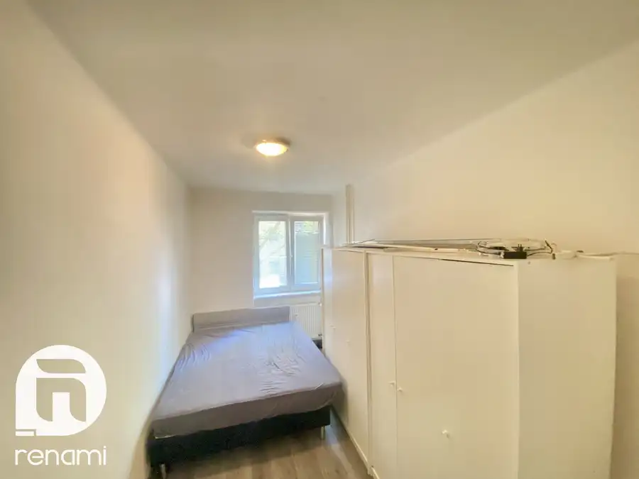

Prenájom parkovacieho miesta garáž Malacky - projekt Pegas
Malacky
- Plocha12 m²
- StavNovostavba
- VlastníctvoOsobné
O nehnuteľnosti
Predstavujeme Vám na prenájom garážové státie č. 62 vo vyhľadávanej a kľudnej lokalite na ul. Petra Jilemnického v rezidenčnom projekte Pegas, v blízkosti vlakového a autobusového spojenia. - v suteréne bytového domu garážové parkovacie miesto na 1 auto s blízkosťou k výťahu. O bezpečnosť parkovania sa stará automatické otváranie garážovej brány o 6 ráno a zatváranie o 20 hod. Mimo týchto časov je k dispozícii ovládanie cez diaľkové ovládanie.CENA: Ročný nájom garážového parkovania je 720€. Preferovaný bude slušný nájomník s dlhším nájomným vzťahom min.1 rok. Pre dohodnutie obhliadky a pre viac informácii nás neváhajte kontaktovať Kontakt:RENAMI s.r.o.Patrik Gróf tel.: +421 915 737 389 e-mail: patrik.grof@renami.skŠTANDARD KTORÝ ZÍSKATE ZDARMA: PORADENSKÝ SERVIS: - komplexné hypotekárne poradenstvo spojené s poskytnutím HÚ (výber najvhodnejšieho bankového produktu s najvýhodnejšími podmienkami pre Vás, spolupracujeme so všetkými bankami) OCHRANA FINANČNÝCH PROSTRIEDKOV: - poradenstvo pri ochrane finančných prostriedkov (hotovosť, HÚ, vinkulácia, notárska úschova atď) PRÁVNY SERVIS: - právne poradenstvo, preveríme právny stav a ťarchy, - vypracovanie rezervačných zmlúv, zmlúv o budúcej kúpe, vypracovanie Kúpnych zmlúv, nájomných zmlúv, zmlúv o krátkodobom nájme, vypracovanie Dodatkov k zmluvám, Plnomocenstiev, vypracovanie Protokolu o odovzdaní bytu do vlastníctva Zaplatíme za Vás: - správne katastrálne poplatky v sume 100 € za návrh na vklad vlast. práva do katastra nehnuteľností, - hradíme podpisy na kúpnych zmluvách, hradíme poplatok za vyzdvihnutie LV použiteľného na právne účely. Spoločnosť RENAMI s.r.o. je OVERENÝM ČLENOM Realitnej únie. COPYRIGHT RENAMI s.r.o. – Fotografie, video, obrázky a texty sú autorským dielom a majetkom realitnej kancelárie Renami s.r.o..
Parametre
| Druh | Garáž |
|---|---|
| Dátum zverejnenia | 17. 7. 2026 |
| Orientácia | Juhozápadná |
| Plocha balkónu v m2 | 4 m² |
| Počet izieb / miestností | 1 |
| Počet nadzemných podlaží | 4 |
| Počet podzemných podlaží | -1 |
| Počet vonkajších parkovacích miest | 1 |
| Rok výstavby | 2022 |
| Stav nehnuteľnosti | Novostavba |
| Typ | Prenájom |
| Vlastníctvo | Osobné |
| Vybavenie | Balkón, Lodžia, Verejné parkovanie |
| Vykurovanie | Ústredné |
| Zastavaná plocha | 12 m² |
| Úžitková plocha | 12 m² |
Kde to je


Mohlo by Vás zaujímať

DomNové10 2 547 €Prenájom kancelárskych priestorov Hraničná 18 Bratislava Ružinov Ružinov, Bratislava 193 m² Realitná kancelária RENAMI Vám ponúka exkluzívne kancelárske priestory na prenájom v lokalite Bratislava – Prievoz. Areál BRS sa nachádza v…
BytNové10 224 499 €Predaj 2 izb. byt na Záhradníckej ul. Bratislava Staré Mesto Staré Mesto, Bratislava 2-izbový38 m²2. podlažie Predstavujeme Vám na predaj 2 izbový byt na Zahradníckej ulici č. 8 v Bratislave – M.č. Staré Mesto. Byt sa nachádza na 2. poschodí, pozostáva z 2…